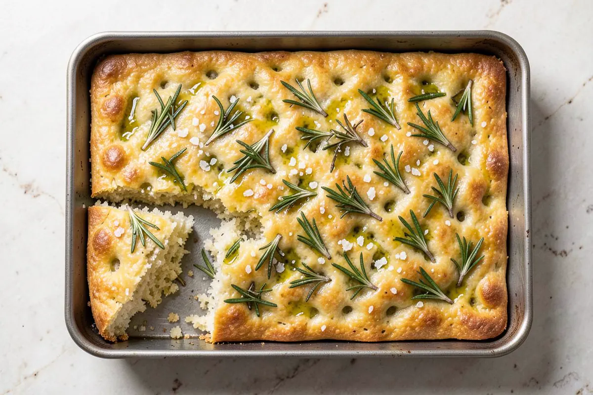

Rosemary Focaccia

Illustrative image.
Focaccia is the most forgiving bread there is. The dough is wet, so it needs no kneading, no shaping and no scoring, and the olive oil in the pan does the work of a hot stone by frying the base as it bakes. If you have never made bread, start here.
What separates a good focaccia from a flat, pale one is mostly patience during the rise and a genuinely hot oven, plus enough oil that the bottom crisps rather than sticks. The dimpling is not decorative either: the wells hold olive oil and salt, and they stop the bread rising into a dome.
Ingredients
- 4 cups bread flour
- 2 1/4 tsp instant yeast
- 1 1/2 tsp kosher salt
- 1 3/4 cups warm water, about 100°F (38°C)
- 1/3 cup olive oil, plus more for the pan
- 2 tbsp fresh rosemary needles
- 1 tsp flaky sea salt
Instructions
- Whisk the flour, yeast and salt together in a large bowl. Pour in the warm water and 2 tablespoons of the olive oil and stir with a sturdy spoon until no dry flour remains. The dough will be wet and shaggy, closer to a batter than a kneadable ball.
- Cover the bowl and let it rise at room temperature for 2 hours, until doubled and bubbly. If your kitchen is cool, give it 30 minutes more rather than moving it somewhere hot.
- Pour 2 tablespoons of olive oil into a 9x13-inch pan and tip the dough in. Fold the dough over on itself four times, turning the bowl a quarter turn between folds, then flip it seam side down in the pan.
- Cover and let it relax for 45 minutes. Oil your fingers and press the dough out towards the corners, dimpling it deeply all over with your fingertips rather than pushing it flat.
- Scatter the rosemary over the top, drizzle with the remaining oil and sprinkle with flaky salt. Bake at 425°F (220°C) for 22 to 25 minutes, until the top is golden and the underside sounds hollow when tapped.
- Slide the focaccia out of the pan onto a rack immediately so the base does not go soggy, and let it cool for 10 minutes before cutting.
Why this recipe works
A wet dough develops gluten on its own given time, which is why this needs folds rather than kneading. Folding the dough over itself in the pan builds strength without deflating it, and the long rise develops flavour that a fast yeasted dough never has. The preheated pan and generous oil create a shallow fry on the base, giving the crunch that the top cannot provide, and the dimples keep the surface from ballooning away from the oil.
Tips for success
- Use bread flour if you have it. The extra protein holds the gas in a wet dough better than plain flour.
- Oil your hands, not the dough, when folding and dimpling. Wet hands stick; oily ones do not.
- Dimple right to the bottom of the pan. Shallow presses only mark the surface and the bread still domes.
- Do not skimp on the oil in the pan. It is what crisps the base, and the bread absorbs a surprising amount.
- Cool it on a rack, out of the pan. Left in the pan, the base traps steam and goes soft within ten minutes.
Substitutions that work
- All-purpose flour works with a slightly longer rise; the crumb will be a little less open.
- Instant yeast can be replaced with active dry yeast, proved in the water for ten minutes first.
- Thyme, oregano or sliced olives can replace or join the rosemary, and cherry tomatoes pressed into the dimples are excellent.
- A tablespoon of honey in the water gives a softer crumb and a slightly browner crust.
Storage and make-ahead
Focaccia is best the day it is made. Keep it wrapped at room temperature for two days, and refresh it in a 350°F (175°C) oven for five minutes to bring the crust back. Slices freeze well for two months and can be reheated from frozen, which is better than the fridge for texture.
Serving suggestions
Cut into squares and eat warm, or split it for sandwiches the next day. It suits soup, a plate of cured meat and cheese, or simply a bowl of good olive oil with more salt and pepper in it.
Frequently asked questions
Can I make focaccia with all-purpose flour?
Yes. Use the same weight, expect a slightly denser crumb, and give the dough an extra 30 minutes to rise since plain flour develops gluten more slowly.
Why did my focaccia come out flat?
Either the yeast was dead, the dough was under-risen, or it was dimpled after a second rise rather than before baking. Let it double visibly and bubble before it goes in the oven.
Can I make the dough ahead of time?
Yes. Let it rise at room temperature for an hour, then refrigerate overnight. Bring it back to room temperature in the pan for about 90 minutes before dimpling and baking.